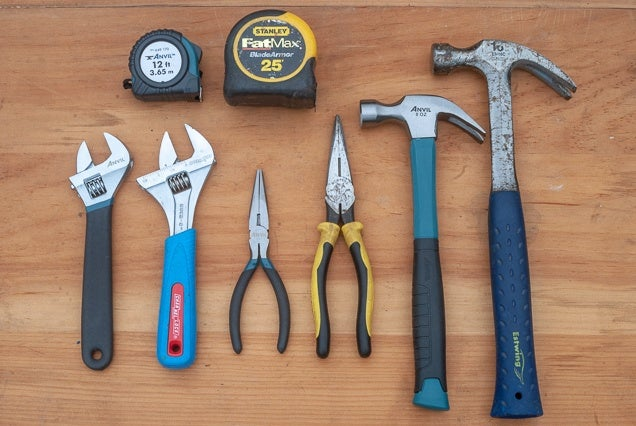
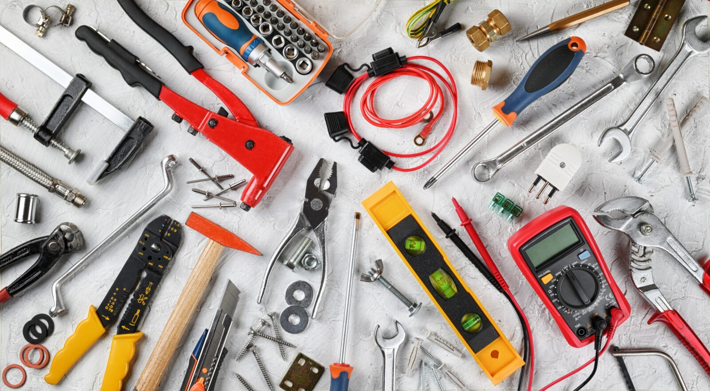
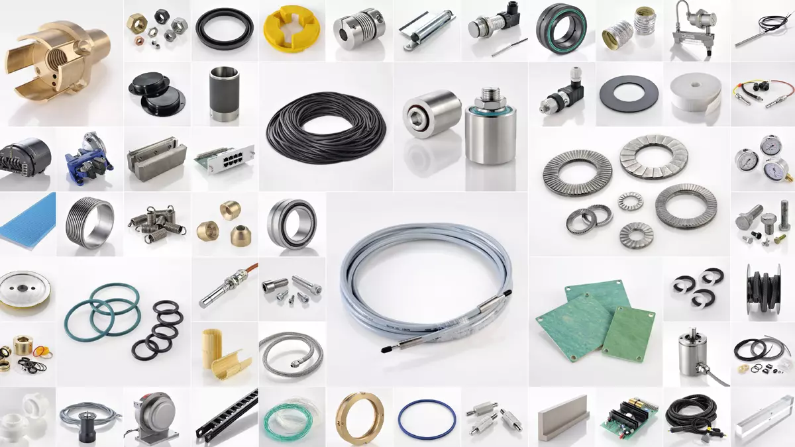
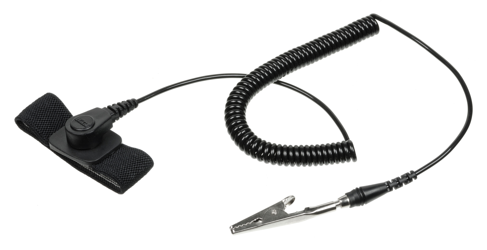

Introduction
In this lesson, you will learn how to effectively plan for maintenance and repairs by selecting the appropriate tools and equipment. You’ll also understand the importance of following safety protocols and performing tasks with care. By mastering these skills, you'll ensure the efficiency, longevity, and safe operation of systems and equipment through regular maintenance and timely repairs.
1. Identifying the Right Parts, Tools, and Equipment
Selecting Appropriate Tools:
-  Use basic tools (screwdrivers, wrenches) for common tasks.
-  For specialized tasks, use a multimeter (for electrical work) or a soldering iron (for repairs on circuit boards).
-  Ensure you have replacement parts compatible with the system you're working on.
Safety Equipment:
-  Always wear anti-static wrist straps when working with electronics to prevent damage from static.
-
 Wear gloves, safety glasses, and a mask when dealing with chemicals, sharp
parts, or debris to protect yourself.
Wear gloves, safety glasses, and a mask when dealing with chemicals, sharp
parts, or debris to protect yourself.
Understanding Safety Protocols:
- Always power down equipment before performing any repairs.
- Follow manufacturer guidelines for using tools and equipment safely.
2. Step-by-Step Maintenance Procedures
Step 1: Analyze the Problem
Use diagnostic tools to identify the issue (e.g., a multimeter for electrical problems or software for system issues).
Step 2: Gather the Right Tools & Parts
Ensure you have the proper replacement parts and tools ready (e.g., screwdriver for opening the case, anti-static wrist strap).
Step 3: Follow Safety Protocols
Always disconnect power sources (unplug the device or turn off the power supply) before opening or repairing the system. Wear safety gear such as gloves and safety glasses. Use an anti-static wrist strap to prevent damage to electronics.
Step 4: Perform the Task
Carefully follow the repair steps, using the appropriate tools. Handle parts gently to avoid damage.
Step 5: Test the System
After completing the maintenance, ensure the system works as expected, using diagnostic tools if necessary.
Step 6: Record the Work
Document the maintenance or repair work for future reference, including the tools used and any issues found.
3. Demonstrating Responsibility for Regular Maintenance
Why Regular Maintenance Matters:
- Efficiency: Regular maintenance ensures tools and equipment perform at their best, minimizing downtime.
- Longevity: Consistent care extends the lifespan of equipment and reduces the need for costly repairs.
- Safety: Regular checks help identify potential safety risks, keeping you and others safe.
- Cost Savings: Prevents larger, more expensive issues by addressing smaller problems early.
Practice 1: Fill in the Blanks
Tools and Equipment List:
Multimeter
Anti-static wrist strap
Power down
Safety glasses
Replacement parts
1. Before starting any repair work, always to ensure there is no electrical current running through the system.
2. To test the electrical components of a device, you would use a .
3. When handling sensitive electronic parts, it is important to wear an to prevent static damage.
4. If a part is damaged or worn out, you will need to use to ensure the system operates correctly.
5. Always wear to protect your eyes from dust, debris, or chemicals during the repair process.
Let's have a Quiz
Click the button below to access the quiz: